Next: Materials Up: Boundary conditions Previous: Face-to-Face Mortar Contact Contents
The massless node-to-face contact formulation has been introduced in CalculiX in order to model perfectly hard contact within explicit dynamic calculations. The implementation closely follows [69].
For the sake of simplicity, frictionless contact is taken as example. Let  denote the gap,
denote the gap,  is the contact force.
is the contact force.
For a zero contact force the gap can be any positive real number including zero
(
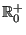 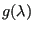 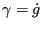 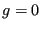 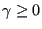 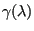
Now, a couple of mathematical concepts are introduced. For further details the reader is referred to [52] and [102].
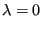 |
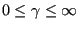 |
(341) | |
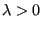 |
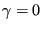 |
(342) |
The admissible set on which is defined is .
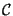
is convex if any linear combination of elements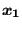
and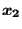
of the form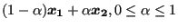
also belongs to . For instance, the interior of a circle in two-dimensional space is convex. This also applies to the interior supplemented by the boundary of the circle. The interior of a ring is not convex. is convex.
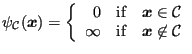 |
(343) |
So the indicator function is zero for all elements included in the set and infinity else. The indicator function for is shown in Figure 137 (bold line)
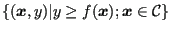
is a convex set. For instance, for a function on a set in the two-dimensional domain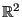
this means that the three-dimensional volume above the function values has to be a convex set. Since the indicator function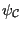
is zero everywhere in the set it is clear that the indicator function of a convex set is convex.
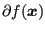
of a convex function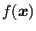
is defined by:
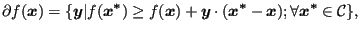 |
(344) |
for
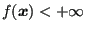 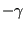 ” is the inner product. This means that all function values
have to
exceed a “tangent” straight line with the subdifferential as slope. As
shown in Figure 138 the
subdifferential at point
” is the inner product. This means that all function values
have to
exceed a “tangent” straight line with the subdifferential as slope. As
shown in Figure 138 the
subdifferential at point  , where the function is continuous
differentiable,
coincides with the derivative. In point
, where the function is continuous
differentiable,
coincides with the derivative. In point  , where the function is
continuous
but not differentiable, the subdifferential consists of all tangent
lines in
between the left and right derivative at that point. Thus, the
subdifferential
in
, where the function is
continuous
but not differentiable, the subdifferential consists of all tangent
lines in
between the left and right derivative at that point. Thus, the
subdifferential
in  is multivalued and a set-valued function. The same applies to the
origin
in Figure 137 (dashed lines). Indeed, by comparing Figures
136 and 137 one observes that the
subdifferential of
the indicator function of
coincides with
is multivalued and a set-valued function. The same applies to the
origin
in Figure 137 (dashed lines). Indeed, by comparing Figures
136 and 137 one observes that the
subdifferential of
the indicator function of
coincides with
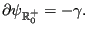 |
(345) |
From analysis it is well known that for a continuous differentiable
function a
minimum requires that the derivative is zero. From Figure
138 it
is obvious that for a minimum of a 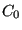
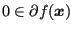 |
(346) |
has to be satisfied. For the indicator function  the definition of
subdifferential reduces to:
the definition of
subdifferential reduces to:
since the indicator function is zero in .
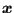
is defined by:
i.e. it is the set of all vectors which make an angle
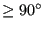 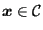 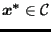
Looking at Figure 139 the normal cone in 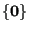 is
is
 it is (the vectors on) a straight line locally orthogonal to
and in
it is (the vectors on) a straight line locally orthogonal to
and in  it is (the vectors within)
a cone bordered by the dashed lines. By comparing Equations (347)
and (348) it is clear that:
it is (the vectors within)
a cone bordered by the dashed lines. By comparing Equations (347)
and (348) it is clear that:
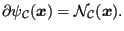 |
(349) |
This establishes a relationship between the subdifferential and the normal cone concept.
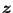
w.r.t. is defined by:
| prox 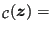 argmin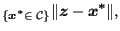 |
(350) |
i.e. it is the point within
which is closest to
. For instance, looking at Figure 139 the
proximal point of
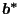 and the proximal
point of
is
and the proximal
point of
is
 . Now, the concept of
proximal point can be linked to the normal cone and subdifferential
definitions. Indeed:
. Now, the concept of
proximal point can be linked to the normal cone and subdifferential
definitions. Indeed:
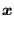 |
prox 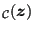 |
(351) | |
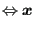 |
argmin 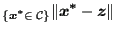 |
(352) | |
| argmin 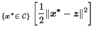 |
(353) | ||
| argmin 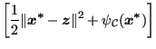 |
(354) |
Notice that by adding the indicator function the constraint
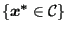
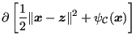 |
(355) | ||
| (356) | |||
| (357) | |||
| (358) |
This means that one can write:
| prox | (359) |
This finishes the mathematical excursion.
Applying this to the relationship between the gap velocity and the
normal contact force  one can write:
one can write:
| prox | (360) |
which turns a set relationship into a nonlinear equation, which is easier to solve. Notice that solving for a proximal point usually boils down to a projection on the admissable set.
If friction is present the feasible domain consists of the positive real numbers (including zero) for the normal contact, and a disk with a radius equal to the friction coefficient times the normal force:
| (361) | |||
| (362) | |||
| (363) |
Notice that the feasible domain is split into a normal and a tangential
domain. Therefore, also the projection is split: in normal direction the
projection is on
, in tangential direction on  .
.
In the following a node-to-face contact definition is assumed
(cf. Section 6.7.6) . For the gap
definition one can start from MPC's connecting a slave node with the opposite
master face, e.g. for node  in Figure 140:
in Figure 140:
| (364) |
where represents the displacement field. In the more general case the coefficients have to be determined from the shape functions of the master face. The gap vector can now be written as (assuming the gap is at the beginning of the calculation zero):
| (365) |
This vector can be transformed in a coordinate system leading to a normal component and two tangential components for the gap. This can be done for all slave nodes leading to the relationship:
contains the gap in local coordinates. Its length is 3 times the number of slave nodes in the model (for three-dimensional applications). is a vector containing the displacements of all contact boundary nodes, i.e. slave nodes and master nodes, in the global orthogonal coordinate system. represents the initial gap. Assuming small sliding and small deformations, the matrix can be assumed constant. Taking the derivative w.r.t. time of the above equation yields:
where denotes the velocity of all contact boundary nodes. Now, the equations of motion are written thereby neglecting the mass and damping terms for the contact boundary nodes (the index i denotes the internal nodes):
| (368) |
or
and
Here, represent the contact forces in the slave nodes in a local coordinate system. The size of this vector is three times the number of slave nodes. are the contact forces in all nodes (slave and master) in global coordinates. The motivation for neglecting the inertia terms at the contact boundary comes from the fact that these forces were observed to lead to substantial scatter in the solution in the contact area.
From Equation (369) one obtains for
the displacements at the boundary nodes for time increment  :
:
Now, a Verlet scheme in its leapfrog form [69] is proposed based on the
trapezoidal rule and a shifted grid. This means that displacements are
evaluated at times and , while velocities are evaluated at
times
and
. Evaluating Equation
(367) at time step  and using
one obtains:
and using
one obtains:
| (372) |
and after substituting :
or, introducing the symmetric matrix and vector :
So the contact constraint at time (also called an inclusion problem):
| (375) |
now amounts to:
or
| prox | (377) |
The latter equation can be solved in an iterative way [102]:
where is a diagonal matrix with relaxation factors and  is the
iteration index. The relaxation factors are taken to
be
is the
iteration index. The relaxation factors are taken to
be
| if | (379) | ||
| if | (380) |
where is a relaxation parameter.
Summarizing, the contact displacements in time step are solved using the following steps (knowing , , and ):
The solution of the contact problem, however, is restricted to the active contact degrees of freedom. Indeed, only for the nodes in contact the gap velocity is positive and Figure 136 applies. The procedure to determine these active contact degrees of freedom is called an active set strategy. Two cases are considered. For the initially open case (i.e. no contact at ) the gap is calculated at by substituting Equation (371) for into Equation (366). The active degrees of freedom are those for which the gap is nonpositive. For the preloaded case (i.e. the contact forces at are positive) the preload is calculated from Equation (371) assuming sticking contact, i.e. . Then, the active degrees of freedom are those, for which this sticking contact is changing, i.e. either the normal preload is negative or the tangential preload exceeds the sticking range and slip occurs. For details the reader is referred to [69].
Once is calculated can be calculated by substituting and in Equation (370) expressed at time leading to:
The solution of this set of equations requires a linear equation solver. The mass matrix does not change during the calculation. If the damping matrix does not change either, the factorization step in the linear equation solver can be done just once at the start of the calculation. This drastically reduces the computation time. Knowing the value of the displacements in the internal nodes can be obtained from:
Consequently, the overall algorithm can be summarized as follows, knowing , , , , and :
In the first increment (k=1) , and have to be known.
Right now, the following limitations apply to the massless contact method: